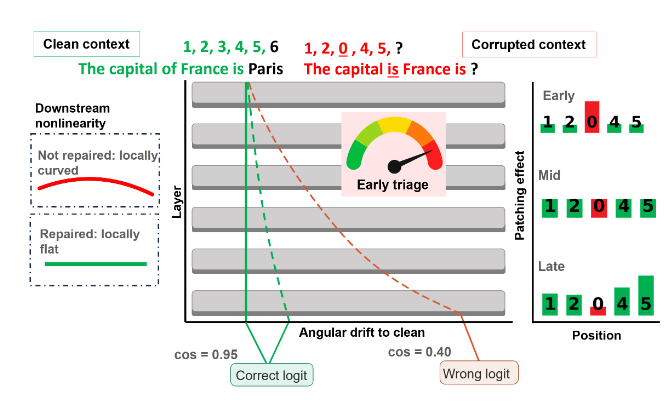
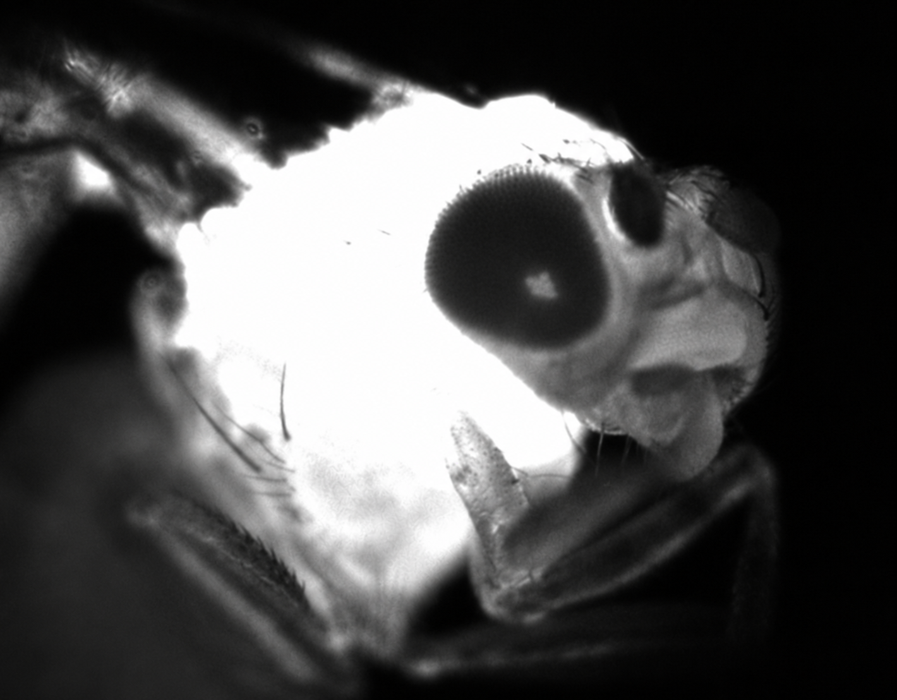

When language models recover from corrupted inputs, and whether intermediate representations predict recovery before the model produces its answer.
I study computation across biological and artificial systems, from representations in language models to the dynamics of neural populations.
I am interested in when a readable representation is also causally important, how models recover from corrupted inputs, and how information moves between modalities.

When language models recover from corrupted inputs, and whether intermediate representations predict recovery before the model produces its answer.
A benchmark testing whether vision-language models recover the same figurative meanings from matched images and text, and where their representations diverge.
Controlled tasks with known Bayes-optimal estimators let me compare probe accuracy with meaningful floors and ceilings, and distinguish decodability from causal contribution.
MetaLex grew out of my internship with Cheston Tan at A*STAR. REPAIR is a collaboration with Jacob Beck.
My experimental and computational work asks how neural systems represent their environment and change their own sensory input.

Retinal movements and behavioural responses to visual stimuli, asking how an animal reshapes its own sensory input through the loop between neural activity, body, and environment.
I use models of dynamics and control to connect changes in a system’s activity with changes in what it can compute.
Co-adaptive biological–artificial intelligence
Writings by topic · Full research experience (Neuroscience CV)